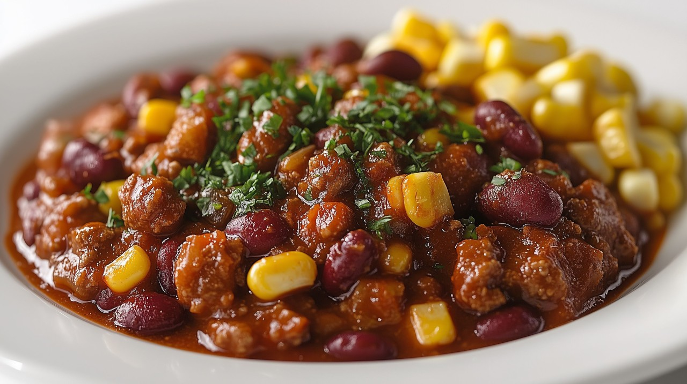

Vegan Chili

(Image credit and license:
Marco Verch
CC BY 2.0 )
Description
This spicy vegan chili is loaded with beans, colorful peppers, and other veggies for a hearty and flavorsome
dinner that's easy to make in a slow cooker.
Ingredients
- 1 tablespoon olive oil
- 2 onions, chopped
- 1 green bell pepper, chopped
- 1 red bell pepper, chopped
- 1 yellow bell pepper, chopped
- 4 cloves garlic, minced
- 2 (14.5 ounce) cans diced tomatoes with juice
- 1 (15 ounce) can black beans, rinsed and drained
- 1 (15 ounce) can garbanzo beans, drained
- 1 (15 ounce) can kidney beans, rinsed and drained
- 2 (6 ounce) cans tomato paste
- 1 (10 ounce) package frozen chopped spinach, thawed and drained
- 1 cup frozen corn kernels, thawed
- 1 zucchini, chopped
- 1 yellow squash, chopped
- 6 tablespoons chili powder
- 1 tablespoon ground cumin
- 1 tablespoon dried oregano
- 1 tablespoon dried parsley
- ½ teaspoon salt
- ½ teaspoon ground black pepper
- 1 (8 ounce) can tomato sauce, or more if needed
- 1 cup vegetable broth, or more if needed
Steps
- Heat olive oil in a large skillet over medium heat. Add onions, bell peppers, and garlic; cook and stir
until onions start to brown, 8 to 10 minutes.
- Transfer mixture into a slow cooker. Stir in tomatoes, black beans, garbanzo beans, kidney beans, tomato
paste, spinach, corn, zucchini, yellow squash, chili powder, cumin, oregano, parsley, salt, and pepper until
thoroughly mixed.
- Pour the tomato sauce and vegetable broth over the ingredients. Cook on Low for 4 to 5 hours. Check
seasoning. If chili is too thick, add more tomato sauce and vegetable broth to desired thickness. Cook on
Low for an additional 1 to 2 hours.
Home